Quasi Anscombe data sets
Source:vignettes/articles/Quasi-Anscombe-data-sets.Rmd
Quasi-Anscombe-data-sets.RmdThe sets
Set 1: The original
library(klassets)
library(ggplot2)
set.seed(123)
df <- sim_quasianscombe_set_1(n = 100, beta1 = 2)
plot(df) +
# xlim(0, NA) +
# ylim(0, NA) +
labs(subtitle = "Original data set")
Set 4: No linear relationship
func <- function(x) 1.5 * x^2
df2_1 <- sim_quasianscombe_set_2(df, residual_factor = 0, fun = func)
funktion <- function(x){ 2 * sin(x*diff(range(x))) }
df2_2 <- sim_quasianscombe_set_2(df, fun = funktion, residual_factor = 1.25)Set 3: Extreme values
df3_1 <- sim_quasianscombe_set_3(df, prop = 0.10)
df3_2 <- sim_quasianscombe_set_3(df, prop = 0.15, residual_factor = 0)Set 4: Clusters
df4_1 <- sim_quasianscombe_set_4(df, prop = 0.25)
df4_2 <- sim_quasianscombe_set_4(df, rescale_to = c(0, .1), prop = 0.5)Set 5: Heteroskedasticity
df5_1 <- sim_quasianscombe_set_5(df, residual_factor = 2)
df5_2 <- sim_quasianscombe_set_5(df, fun = function(x) rev(x**2))Set 6: Simpson’s Paradox
df6_1 <- sim_quasianscombe_set_6(df, residual_factor = 1)
df6_2 <- sim_quasianscombe_set_6(df, groups = 4, b1_factor = 0, residual_factor = 0.1)Combine results
library(dplyr, warn.conflicts = FALSE)
library(tidyr)
library(purrr)
library(broom)
dfs <- list(
"Original" = df,
"Set 2 v1" = df2_1,
"Set 2 v2" = df2_2,
"Set 3 v1" = df3_1,
"Set 3 v2" = df3_2,
"Set 4 v1" = df4_1,
"Set 4 v2" = df4_2,
"Set 5 v1" = df5_1,
"Set 5 v2" = df5_2,
"Set 6 v1" = df6_1,
"Set 6 v2" = df6_2
)
dfs <- dfs |>
tibble::enframe(name = "set") |>
tidyr::unnest(cols = c(value))From [@warnes](https://github.com/warnes) gtools package
stars.pval <- function(p.value) {
unclass(
symnum(p.value,
corr = FALSE, na = FALSE,
cutpoints = c(0, 0.001, 0.01, 0.05, 0.1, 1),
symbols = c("***", "**", "*", ".", " ")
)
)
}Visual representation of the data sets
pxy <- ggplot(dfs, aes(x, y)) +
geom_point(shape = 21, fill = "gray80", color = "gray60") +
geom_smooth(method = "lm", se = FALSE, formula = y ~ x) +
facet_wrap(vars(set))
pxy
Checking Coefficients and its significance
df_mods <- dfs |>
dplyr::group_nest(set) |>
dplyr::mutate(
model = map(data, lm, formula = y ~ x),
parameters = map(model, broom::tidy)
# value = map(model, coefficients),
# coef = map(value, names)
)
dfcoef <- df_mods |>
dplyr::select(set, parameters) |>
tidyr::unnest(cols = c(parameters)) |>
dplyr::mutate(sig = stars.pval(p.value))
dfcoef
#> # A tibble: 22 × 7
#> set term estimate std.error statistic p.value sig
#> <chr> <chr> <dbl> <dbl> <dbl> <dbl> <chr>
#> 1 Original (Intercept) 2.74 0.276 9.93 1.74e-16 ***
#> 2 Original x 2.04 0.0533 38.3 1.01e-60 ***
#> 3 Set 2 v1 (Intercept) 2.74 1.18 2.33 2.20e- 2 *
#> 4 Set 2 v1 x 2.04 0.228 8.97 2.11e-14 ***
#> 5 Set 2 v2 (Intercept) 2.74 0.898 3.05 2.94e- 3 **
#> 6 Set 2 v2 x 2.04 0.174 11.8 1.95e-20 ***
#> 7 Set 3 v1 (Intercept) 2.74 1.15 2.37 1.97e- 2 *
#> 8 Set 3 v1 x 2.04 0.223 9.14 8.86e-15 ***
#> 9 Set 3 v2 (Intercept) 2.74 1.05 2.61 1.06e- 2 *
#> 10 Set 3 v2 x 2.04 0.203 10.0 9.74e-17 ***
#> # … with 12 more rows
dfcoef |>
dplyr::select(set, term, estimate) |>
tidyr::pivot_wider(names_from = "term", values_from = "estimate")
#> # A tibble: 11 × 3
#> set `(Intercept)` x
#> <chr> <dbl> <dbl>
#> 1 Original 2.74 2.04
#> 2 Set 2 v1 2.74 2.04
#> 3 Set 2 v2 2.74 2.04
#> 4 Set 3 v1 2.74 2.04
#> 5 Set 3 v2 2.74 2.04
#> 6 Set 4 v1 2.74 2.04
#> 7 Set 4 v2 2.74 2.04
#> 8 Set 5 v1 2.74 2.04
#> 9 Set 5 v2 2.74 2.04
#> 10 Set 6 v1 2.74 2.04
#> 11 Set 6 v2 2.74 2.04